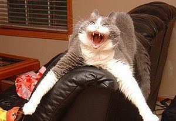

Susto
 De: La Frikipedia, la enciclopedia extremadamente seria.
De: La Frikipedia, la enciclopedia extremadamente seria.

Yamcha y su mirada llena de poco susto
Se conoce como susto a la acción que se realiza en mayor o menor medida con todo el cuerpo como consecuencia del sentimiento o emoción miedo.
El susto es una acción momentánea, que es precedida por el miedo y si se prolonga lo aumenta exponencialmente. Es además involuntaria, o a lo mejor voluntaria por los seres que te manejan desde el incognito y que su propósito es dejarte en ridículo pues el susto siempre se realiza en presencia de amigos y/o familiares, ya sea producido por ellos o por algún factor externo. (Ejemplo común: la TV)
Niveles
El grado de susto es directamente proporcional al del miedo y al del ridículo en cercanía de otros seres inteligentes (como tu mascota). Existen distintos niveles que se realizan de distinta forma:
- Nivel 1: Es un susto mental, en el que no se refleja actividad física. Ej.: ver una factura.
- Nivel 2: Se realiza un pequeño movimiento con todo o parte del cuerpo, normalmente los hombros. Ej: que alguien te toque sin que te los esperes. Los de tu alrededor pueden percatarse de este tipo de susto pero normalmente puedes negarlo con efectividad.
 Gato domestico experimentando el susto nivel 1548454213 versión pirata
- Nivel 3: Se produce una convulsión momentanea de todo el cuerpo. Puede tener secuelas como respiración agitada. Es el más frecuente. Ej: una película mala de miedo. Ante este tipo de susto suelen reirse de la víctima por haberlo tenido y ésta siempre lo negará aunque quede en peor posición todavía.

Intento de susto algo patético.
- Nivel 4: Se produce una gran convulsión de todo el cuerpo pudiendo llegar a elevarse el sujeto, acompañado por un sonido de la boca que varía dependiendo de la persona. Sus secuelas suelen ser jadeos y debilitamiento. Ej: Una buena película de miedo o un Screamer. Ante este tipo de susto el ridículo es imposible de evitar.
- Nivel 5: Se produce una gran convulsión de todo el cuerpo, un grito y caes al suelo si estás de pie o o y si estás sentado te levantas de golpe. A sus secuelas se puede añadir un ligero mareo momentáneo. Ej: Ver una cucaracha. Estate seguro que se van a reir de ti pero ante este caso ya puede haber personas que sientan compasión.
- Nivel 6: Desmayo. Secuela, que estás desmayado. Ej: Suele estar relacionado con la familia ya sea la noticia del embarazo o ver a tu hija montándoselo con alguien. Si llegas a este nivel tienes suerte, nadie se va a reir de tí.
- Nivel 1548454213: Se produce una sensación de desmayarse y de ahogo, mareo inestabilidad emocional, hormigueo adormecimiento de la mitad del cuerpo y un ligero temor a morir, a perder el cabello, respirar por los pulmones, a las mujeres, perder el control y enloquecer. Ej: Ver a un ratón de 7 metros en la cocina o en algún lugar inesperado.
- Nivel
 : Este nivel produce la muerte clínica a los 0,09 segundos de sufrirlo, debido a una eventual parada cardiorrespiratoria irreversible. No es muy común de ver, pero entre sus ejemplos se cuentan este y este otro.
: Este nivel produce la muerte clínica a los 0,09 segundos de sufrirlo, debido a una eventual parada cardiorrespiratoria irreversible. No es muy común de ver, pero entre sus ejemplos se cuentan este y este otro.
Existe otra variante del susto en la que el sujeto reacciona atacando, pero sólo el 0,000001% de las personas reaccionan así.
Frases que suelen seguir a un susto
- ¡Mecagüen...!(variedad de alternativas)
- ........................................................................................................NOo mE hAs asUsTadoOo...
- ¡Ja ja ja ja ja!¡Qué bueno!(los hay masoquistas)
- ..............¡¿(nombre)estás bien?!¡¡¡Llamen a una ambulancia!!!
Autor(es):
- Nexo
- Fordus
- Doctor grijander
- Frikiman
- Khazike Khashondo
- Tachin
- Frikih
- Lunasfingo
- Cybercrank
- Cibercrank
Frikipedia 2005-2016, Licencia
GFDL 1.2 - Extraído por FrikiLeaks